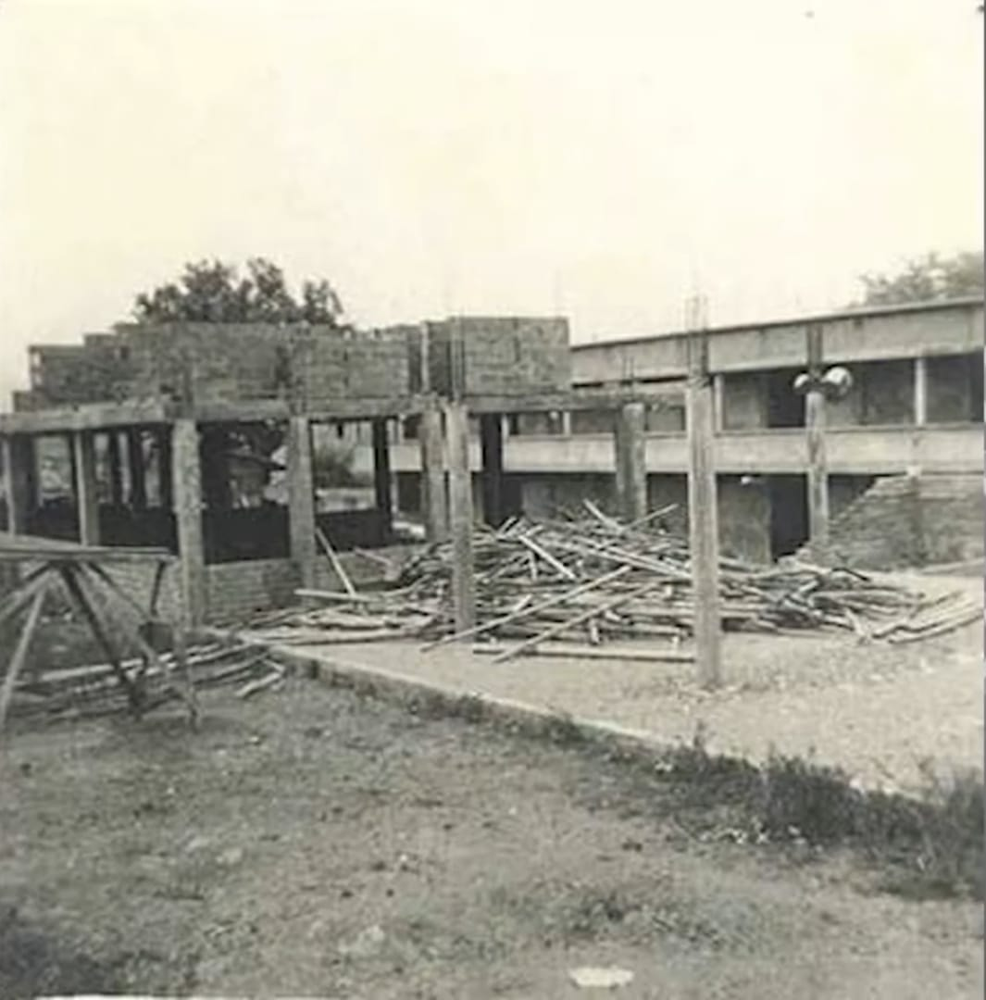
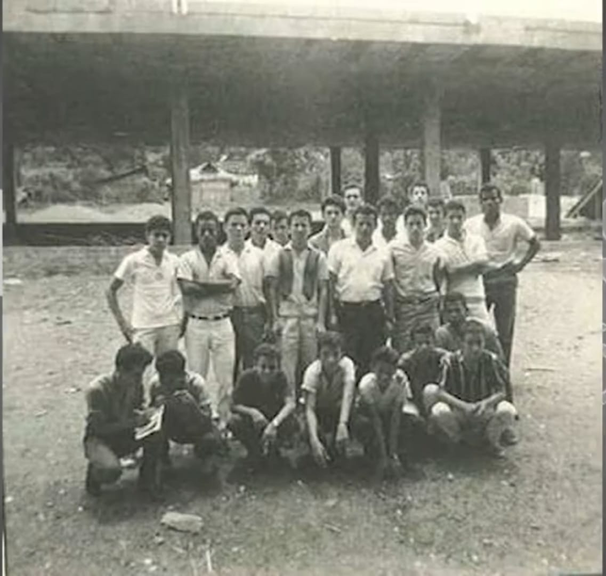
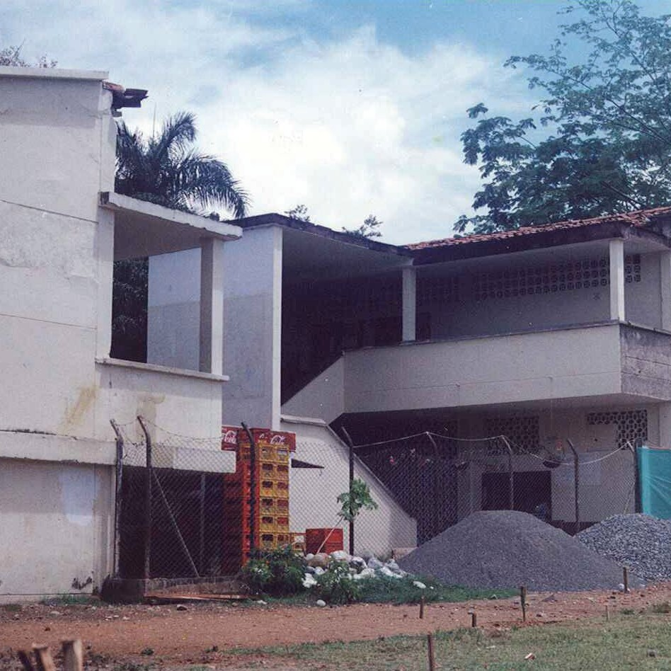
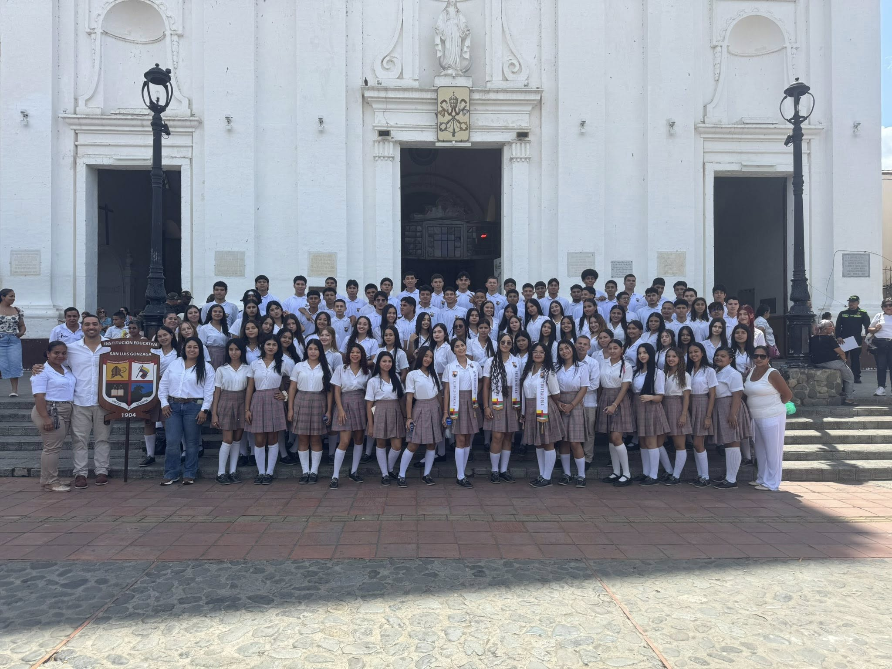

La Crónica del Gonzaga: El Legado que Perdura
Donde la historia y el futuro se encuentran: un recorrido por la trayectoria que nos hizo grandes.
Los inicios
El Legado del Obispo y el Presbítero: Cimientos de la Institución
La Institución Educativa San Luis Gonzaga, faro del occidente antioqueño, no nació por casualidad, sino por una necesidad imperante. Fundada en 1904, su creación fue una respuesta directa de la diócesis para atender las urgencias educativas de la región tras un periodo de inestabilidad y conflicto. Los cimientos de esta casa de estudios fueron puestos por figuras visionarias. El Obispo Manuel López de Mesa fue el impulsor de esta obra, mientras que Francisco Cristóbal Toro fungía como obispo de la época, respaldando la iniciativa. El honor de ser el primer guía de la institución recayó en el Presbítero Esteban de Jesús Cardona, quien asumió la rectoría y marcó el rumbo inicial de lo que se convertiría en la institución más antigua y emblemática de Santa Fe de Antioquia, arrancando su historia en lo que hoy es recordado como su primera sede, un lugar que hoy ocupa un centro comercial.


1904-2025
La Cuna del Saber en el Occidente Antioqueño: Forjadores de Futuro
A lo largo de 120 años, el San Luis Gonzaga ha trascendido la función de un simple colegio para convertirse en el epicentro del crecimiento intelectual y profesional de miles de personas. Reconocida con orgullo como la institución educativa más antigua de todo el occidente antioqueño, su impacto se mide no solo en la longevidad, sino en la calidad de los profesionales y ciudadanos que ha entregado a la sociedad. Su misión ha sido históricamente vital: proporcionar una educación sólida que impulse el desarrollo personal y abra puertas al futuro. La institución ha sabido adaptarse a los cambios del siglo, manteniendo siempre su compromiso fundacional con la excelencia, la disciplina y, sobre todo, con la formación de seres humanos íntegros.
120 años de tradición
Más Allá de los Libros: El Corazón de la Comunidad y la Herencia de Valores
Si algo define a la Institución San Luis Gonzaga, es el profundo sentido de comunidad que ha cultivado entre sus pasillos. Docentes, directivos y personal han dedicado sus vidas a esta misión, generando un ambiente de pertenencia y dedicación que sus exalumnos recuerdan con profunda nostalgia y cariño. Los valores inculcados en el colegio son la verdadera huella que perdura. La dedicación de los educadores ha sido un pilar fundamental en este proceso, dejando una marca imborrable en cada generación.


Memoria viva
Guardianes de la Tradición
Celebrar 120 años es celebrar una vida de recuerdos, anécdotas y la dedicación incansable de quienes formaron parte de su planta docente. La memoria del colegio está tejida con las historias de miles de educadores que, con vocación inquebrantable, moldearon el futuro de Santa Fe de Antioquia. Exprofesores y exalumnos se reúnen en estas celebraciones para honrar el pasado y reafirmar el compromiso con el futuro. La institución, que comenzó en una sede modesta, hoy se erige como un monumento a la perseverancia educativa, un testimonio vivo de que la educación es la herramienta más poderosa para la transformación social.
Huellas del pasado
“Quiero agradecer al colegio y resaltar todos los valores que aprendí, que me han servido como base fundamental para mi vida personal y profesional.”Valeria Casas (Exalumna)
“Tuve la fortuna de trabajar en el San Luis Gonzaga desde el 2000 hasta el 2021, una época que recuerdo con mucho cariño por la dedicación de los estudiantes y el fuerte sentido de comunidad.”Juan de la Cruz Metaute (Exprofesor)